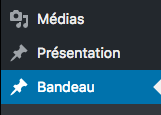

Slider
Ajouter un slider
1. Dans le back-office allez sur " Smart Slider ".

2. Cliquez sur " sample slider " (le troisième item sur la ligne).

3. Sur n'importe quel slide présent : cliquez sur
" ... " en haut à droite dans l'image qui apparaîtra au passage de la souris, un menu déroulant va alors s'ouvrir, cliquez sur " dupliquer ".
Une fois le slide dupliqué cliquez dessus, pour afficher le contenu du slide.

4. Sur la nouvelle page cliquez sur " background ".

5. Changer dans un premier temps l'image en en cliquant sur l'icone vert dans la première ligne appelée " background ", l'image du slide changera avec celle que vous aurez choisie.
Dans un deuxième temps cliquez dans sur le texte en bas de l'image, une fenêtre apparaitra, et tapez votre nouveau texte dans le premier champ.


6. Sur la nouvelle page cliquez sur " settings ".

7. Dans un premier temps changer le titre du slide dans le back office dans le premier champ appelé " Name ",
Dans un deuxième temps changer l'image du thumbnail avec la même image que le slide en cliquant sur l'icone vert dans la ligne appelée " thumbnail " l'image du thumbnail changera avec celle que vous aurez choisie.

8. Sauvegarder les modifications en cliquant sur " SAVE " en haut à droite de la page.
Pour revenir à tout les slider cliquez sur " SLIDER " se trouvant en haut à gauche de la fenêtre.


Modifier un slider
1. Dans le back-office allez sur " Smart Slider ".
2. Cliquez sur " sample slider " (le troisième item sur la ligne).
3. Cliquez sur le slide à modifier et reprenez les étapes de " Ajouter un slide " selon ce que vous devez modifier.
Supprimer un slider
1. Dans le back-office allez sur " Smart Slider ".
2. Cliquez sur " sample slider " (le troisième item sur la ligne).
3. Sur le slide vous voulez supprimer : cliquez sur
" ... " en haut à droite dans l'image qui apparaîtra au passage de la souris, un menu déroulant va alors s'ouvrir, cliquez sur " suprimer ".
Modifier les 3 articles de présentation
Modifier les 3 articles de présentation
1. Dans le back-office cliquez sur " Présentation ".

2. Cliquez sur la présentation à modifier.

3. Changez votre texte et ensuite cliquez sur " mettre à jour " pour sauvegarder les modifications dans le site.

Bandeau
Modifier le bandeau
1. Dans le back-office cliquez sur " Bandeau ".

2. Allez ensuite sur l'article " Bandeau ".
3. Changez votre texte et ensuite cliquez sur " mettre à jour " pour sauvegarder les modifications dans le site.
Afficher le bandeau
1. Dans le back-office cliquez sur " Bandeau ".
2. Allez ensuite sur l'article " Bandeau ".
3. Changez l'état de publication en cliquant en haut à droite de la page sur " Modifier "
une liste à choix apparrait cliquez sur " Publié ".
Ne plus afficher le bandeau
1. Dans le back-office cliquez sur " Bandeau ".
2. Allez ensuite sur l'article " Bandeau ".
3. Changez l'état de publication en cliquant en haut à droite de la page sur " Modifier "
une liste à choix apparrait cliquez sur " Brouillon ".
Quelques activités de la Coopération Féminine
Je ne traiterai ici que de la modification des articles de type " Activités " présent sur la page home, vous trouverez un chapitre dédié aux " Activité " lien vers activités
A noté que seul 3 articles sont affichable sur la page home.
Modifier les activités de la page home
1. Dans le back-office cliquez sur " Activités "
les activités présentent sur la page home auront une deuxième catégorie "Page principale" dans la deuxième collonne.
2. Cliquez sur l'actvité à modifier.
3.Pour changer l'image cliquez sur l'image présente actuellement pour changer l'image à la une.
4. Changez votre texte et ensuite cliquez sur " mettre à jour " pour sauvegarder les modifications dans le site.
Toute modification affectera l'activité sur la page home, mais aussi dans l'onglet Activités à l'intérieur du site.
Événements et Manifestations à venir
Les calendriers présent sont automatiquement mis sur la page home, je ne traiterai pas ici des actions sur des calendriers de type " Événements " ou " Manifestations ".
vous trouverez un chapitre dédié aux " Événements " lien vers programmes et un chapitre dédié aux " Manifestations " lien vers manifestations